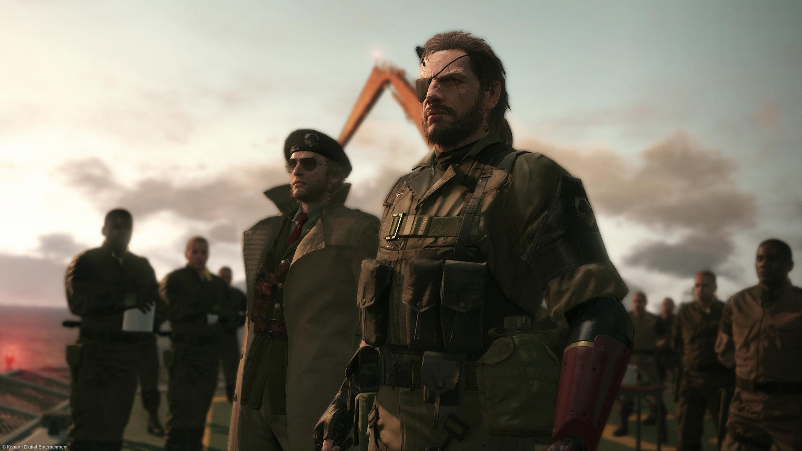
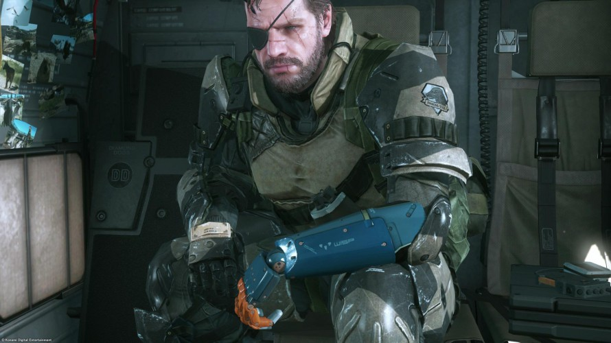
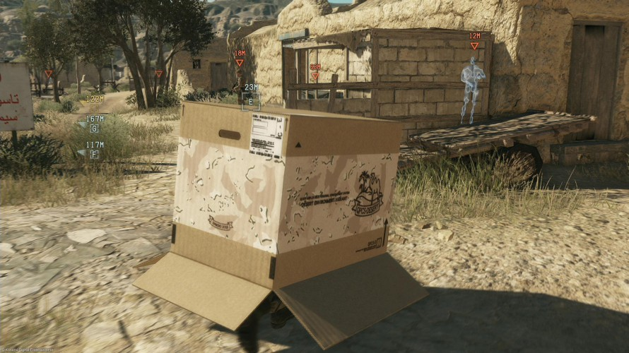

"Kept you waiting huh?" is wat Snake zou zeggen. Ja, onze Metal Gear Solid 5 review heeft een tijdje op zich laten wachten. Maar we hebben 'm eindelijk voor jullie! Pak dus de kartonnen doos (met afbeelding van een fotomodel erop) erbij en doe je ooglapje op. Het is namelijk Metal Gear Solid tijd.
Het is een geweldige tijd om een gamer te zijn. Dit jaar hebben we al kunnen genieten van (onder andere) Until Dawn, Bloodborne, Splatoon, The Witcher 3 en nog veel meer geweldige titels.
Deze games zijn al solide kandidaten voor game van het jaar. En nu kunnen we ook Metal Gear Solid 5 aan dat lijstje toevoegen.
Meesterbrein Hideo Kojima heeft met deze game namelijk een nagenoeg perfecte stealth game afgeverd, met kwaliteit waar de meeste ontwikkelaars alleen maar van kunnen dromen. The Phantom Pain is het wachten meer dan waard geweest. Laten we kijken waarom.
Metal Gear Solid 5 speelt zich af na de gebeurtenissen in de proloog (en vorig jaar verschenen game) Ground Zeroes. Big Boss is in een coma beland nadat Mother Base, zijn eigen basis op zee, werd aangevallen door XOF. Negen jaar later wordt de slangenman wakker en komt hij erachter dat hij alles kwijt is geraakt. In The Phantom Pain neemt de legendarische soldaat wraak en begint hij opnieuw een particulier leger: de Diamond Dogs.
Als je de game voor de release al volgde is dit natuurlijk niets nieuws. En hoewel het nu simpel klinkt, heeft het verhaal veel meer om handen. Het verhaal van Metal Gear Solid 5, verspreid over 50 missies, is een achtbaanrit vol met militaire intriges, shockerende momenten en een hoop verwarring.
Het klinkt allemaal erg vaag, maar dat komt ook omdat het zo is. Het zou zonde zijn om momenten uit het verhaallijn in deze review te verklappen, en dat gaan we ook niet doen. We zeggen alleen maar dat het een feest is voor Metal Gear Solid fans, maar misschien niet sterk genoeg voor gamers onbekend met de Metal Gear Solid games. Jammer, want dit was een goede mogelijkheid om nieuwe gamers aan de franchise te introduceren.
Wel zijn er qua presentatie van het verhaal een aantal grote verbeteringen gemaakt. De lange tussenfilmpjes die de Metal Gear serie zijn handelsmerk heeft gemaakt, zijn niet meer zo prominent aanwezig, net als de beruchte eindeloos durende codec calls. In plaats daarvan krijgen we cinematografisch interessante cutscenes, waarin de camera zich als een soort personage door scènes heen beweegt. Deze cutscenes zijn meesterlijk in elkaar gezet op een filmische manier, zodat ze zelfs interessant zijn als je eigenlijk niet weet wat er gebeurt.
Eventuele problemen met het verhaal verdwijnen als sneeuw voor de zon als je daadwerkelijk begint met het spelen van Metal Gear Solid 5. Nagenoeg alle aspecten van een missie zijn aanpasbaar, van de wapens die je meenemt tot hoe laat de helikopter je op de grond zet. Het is dus helemaal aan jou hoe je uiteindelijk bij je doel komt. De game geeft je zo’n uitgebreid scala aan opties om missies te voltooien dat bijna iedere speler wel een unieke ervaring met de game heeft.
We waren bang dat missies al snel doelloos en saai worden, maar dit is niet het geval. Metal Gear Solid 5 speelt zich wel af in een grote open wereld, maar wanneer je een missie start ben je gelimiteerd tot een beperkt gebied. Je wordt dus niet zomaar in een groot open gebied gegooid met een willekeurige opdracht; de actie blijft altijd geconcentreerd. Ondanks de grootte van de wereld voelt het wel alsof alles perfect uitgedacht is.
Daarnaast voelt Metal Gear Solid 5 ook aan als een complete, afgemaakte game. Naast de tientallen uren die je besteedt aan het verhaal zijn er ook nog talloze sidequests beschikbaar. Wij hadden na een flinke week spelen dan ook nog bij lange na niet alles gezien; de game is de aanschafprijs meer dan waard in gameplay uren. En dan tellen we nog niet eens het online gedeelte mee!
We kunnen nog duizend woorden schrijven over de game, maar dat zou niets uithalen. Kojima Productions heeft met Metal Gear Solid 5 gewoon de perfecte stealth game afgeleverd. De speelwereld voelt levend aan, de FOX Engine is fantastisch, de hoeveelheid vrijheid is geniaal en de game voelt helemaal af. Toch kunnen we de microtransacties niet vergeven, en het verhaal kan voor nieuwkomers een complete mindfuck zijn.